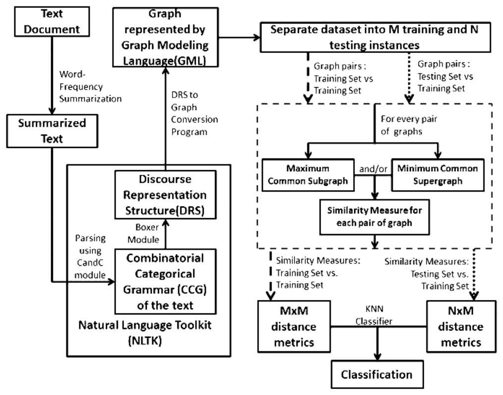

Turning news summaries into meaning graphs to sort them by topic
Most programs that sort documents by topic count words and ignore how the words connect. We asked whether a graph that records who did what to whom could do the job instead. We converted short summaries of Reuters news stories into graphs, tried five different ways of measuring how far apart two graphs are, and used them to sort the stories into 20 topics.
The problem
The usual method is called bag-of-words. It treats a document as a pile of words, counts them, and hands the counts to a learning algorithm. It works well, but it cannot tell "the dog bit the man" from "the man bit the dog". For tasks such as opinion mining, the paper points out, that loss of meaning matters.
A graph is a drawing made of dots (nodes) joined by lines (edges). It is a natural way to store meaning: the dots are things, the lines are the relations between them. The catch is cost. The standard way to compare two graphs is to find the biggest piece they share, called the maximum common subgraph. Finding it exactly is an NP-hard problem, which in practice means the running time explodes as the graphs grow.
From a sentence to a graph
We first shrank each document to its two or three most typical sentences, picked by how often their words occur in the topic. Smaller texts give smaller graphs, and smaller graphs keep the comparison affordable.
Then we used two existing tools, the C&C parser and Boxer, to read each sentence and write out a discourse representation structure. That is a list of the things mentioned (called referents) and the facts that hold between them (called conditions). For "He drinks water" the facts are: x1 is male, x2 is water, x3 is a drinking event, x1 is the agent of the event, and x2 is its patient. We turned this into a graph. Each referent became a node, a fact about two referents became a labelled edge, and a fact about one referent became a loop on its node.

Measuring the distance between two graphs
We used five distance formulas taken from earlier work on recognising objects in images. All of them rest on two quantities. One is the maximum common subgraph, the largest structure that appears in both graphs. The other is the minimum common supergraph, which is simply the two graphs laid on top of each other. The formulas compare their sizes, and each can count either nodes or edges, so we ended up with ten measures.
Because exact matching is too slow, we used an approximation. We ranked pairs of nodes, one from each graph, by how many matching loops they carry, then built the shared subgraph greedily from the best pairs. Finally, a k-nearest-neighbour classifier gave each test document the majority label of its k closest training documents.

What we found
We used 20 topics from the Reuters-21578 collection, with 10 documents per topic for training and 10 for testing, and tried k = 3, 5 and 7. The best graph result was 51.50% accuracy, from the edge-based version of the fifth distance with three-sentence summaries and k = 7. The worst was 35.50%. Bag-of-words, run on the same summaries, scored between 48.50% and 50.50%.
Two patterns stood out. The measures that counted edges did better than their node-counting twins, which suggests the relations carry real information. And three-sentence summaries did better than two-sentence ones. The five distances behaved alike: averaged over k, their three-sentence edge-based accuracy was 49.43 ± 0.38%.
Topic by topic, the picture is mixed. For the gold topic, the F-measure (a single score that balances finding the right documents against picking wrong ones) rose from 0.25 with word counts to 0.71 with graphs. Words such as "ounces" and "carat" are rare, so counting overlooks them, while the graph ties them to "gold". For carcass it went the other way, 0.95 against 0.32, because "beef" and "pork" are enough on their own. Averaged over all topics the two methods tie at 0.51.
What it does not show
The test set is small, only 200 documents, and the graph method matched bag-of-words rather than clearly beating it. We also did not study how much the summarising step helps or hurts. We list that as future work, along with trying support vector machines on graph kernels.
A companion paper mixed these graph measures with word counts, and the combination gained accuracy.
Acknowledgements
This work was funded by Emma in the framework of the EU Erasmus Mundus Action 2.
How to cite the paper
N Das, Swarnendu Ghosh, T Gonçalves, P Quaresma (2014). Comparison of different graph distance metrics for semantic text based classification. Polibits, Vol. 49.